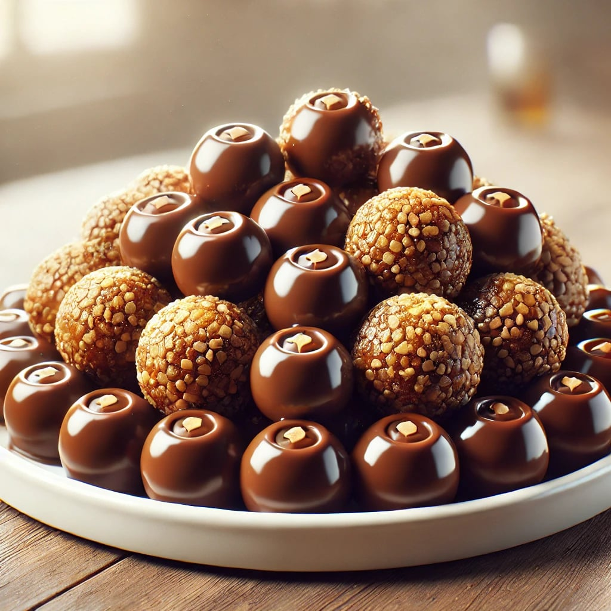

Bniwen

Delightful and light desert balls coated in chocolate
Bniwen is a no-bake Algerian desert, usually made for the end of ramadan or special occasions.
Ingredients:
The dough:
- 1 cup Graham crackers
- 0,5 cup nuts mix
- 0,5 cup Almond flour
- 0,5 cup Turkish Halve
- 50gr of butter (room temperature)
- 3 tbsp of cocoa powder
- 1 tbsp Cinnamon
- 1 tbsp honey
The chocolate coating:
- 100 gr dark chocolate
- 20 gr cocoa butter (or regular butter)
Steps to follow:
-
The Dough:
- Starts by processing your crackers, and then seperately process the nuts mix, and then after that the Turkish halve
- In a bowl add all the ingredients, in any order. Just make sure the butter is at room temperature
- Using a spatula, or just your hand, make sure everything is nicely mixed, and that you don't have clumps of butter, cocoa, or honey.
- Once your dough is nice and homogenous, start shaping it in anything small sized bites you would like.
- If the dough is too dry consider adding more butter, or more honey. This is optional and to your taste. just make sure that your dough can be shaped into small sized bites and hold that shape
- Put your small bites in a container and let them chill in the fridge while you make the coating
-
The coating:
- Melt the chocolate and the butter, either in a microwave or in a bain-marie.
- Once melted, make sure to nicely mixed the whole thing
- Take your bites from the fridge and either dip them in the chocolate or drizzle it on top
- If you have left over processed crackers or nuts. drizzle them on top
- Once done, leave the whole thing to chill for at least 6 hours. overnight is best
- Serve with a nice cup of tea. Enjoy!
Return to main page